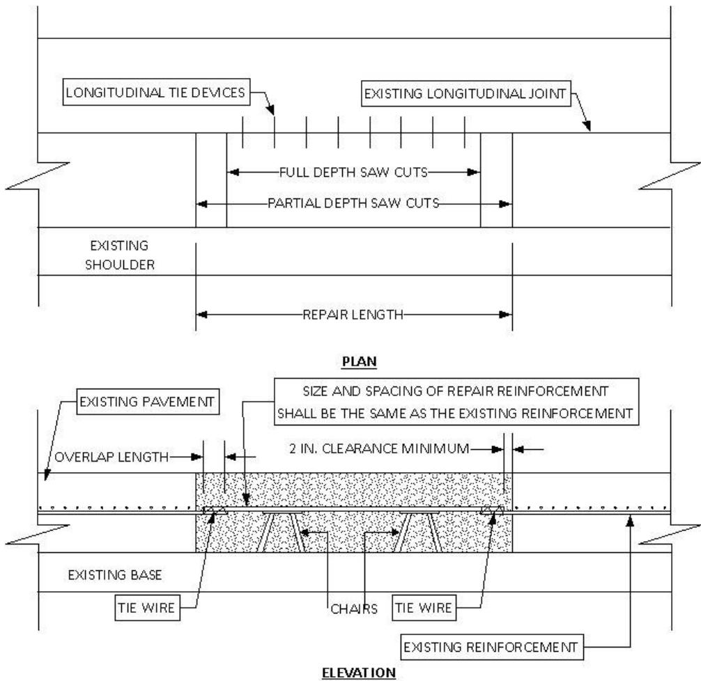
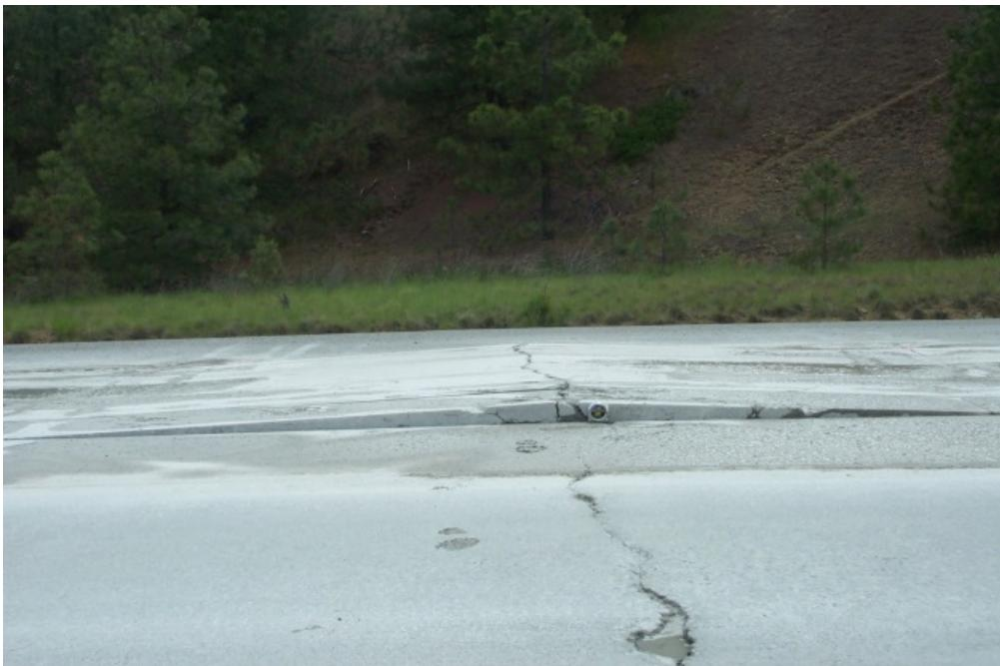
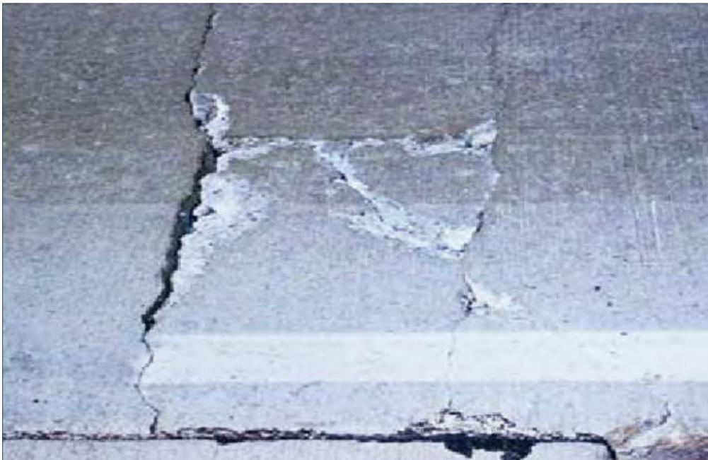
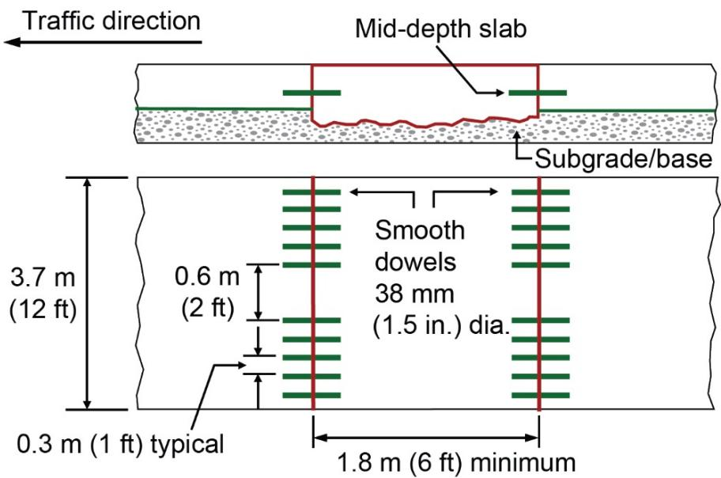
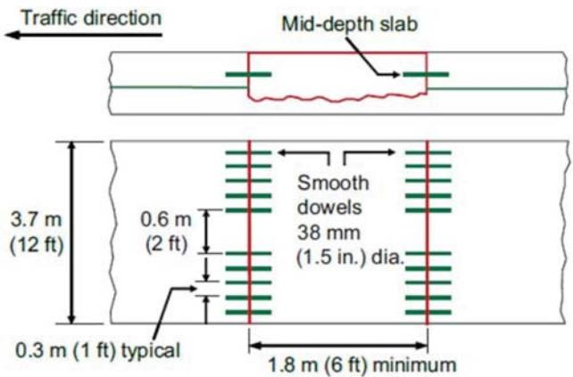
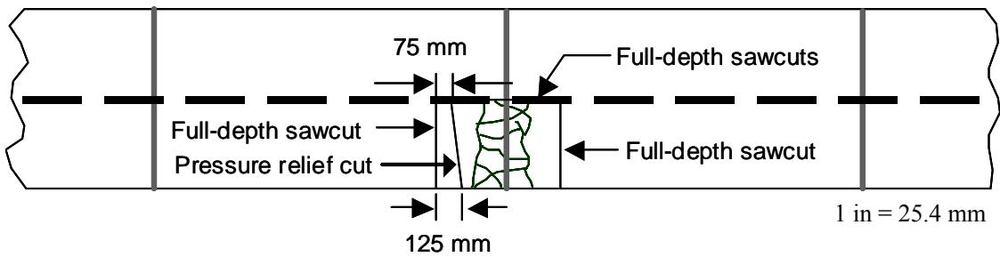
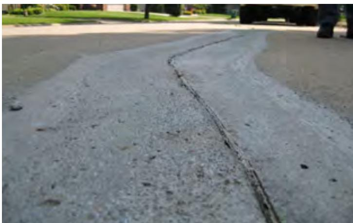
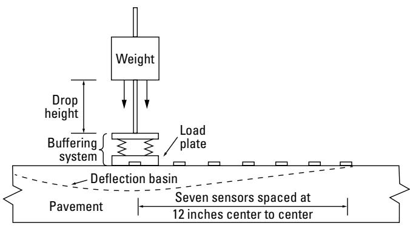

Full-Depth Pavement Repair Method
Full‑Depth Pavement Repair (FDR) is a rehabilitation technique used when a concrete or asphalt pavement has lost structural capacity because distress—such as joint spalling wider than four inches, cracks extending beyond one‑third to one‑half of slab thickness, delamination, blowouts, or base/subgrade failure—penetrates a substantial portion of the slab [1][2]. The method removes the damaged concrete (or cement‑stabilized asphalt) through its full depth and replaces it with cast‑in‑place or precast concrete, installing matching reinforcement and load‑transfer devices to reestablish continuity, thereby restoring lost load‑carrying capacity, ride quality, and a smooth surface [3][4][6]. By providing a stronger base and preventing further deterioration, full‑depth repairs can extend the pavement’s service life for ten to twenty years or more while also allowing utility‑cut repairs and base stabilization [5][7][12].
CP Tech Center Guides reports covering “Full-Depth Pavement Repair Method” also include the following subtopics: EOT Concrete Repair Mix Design.
The Full‑Depth Pavement Repair Method utilizes the EOT Concrete Repair Mix Design as its material input, employing a low‑slump, air‑entrained Portland‑cement blend that sets rapidly to achieve high early compressive strength. [1][14] This specific mix formulation allows the repaired pavement sections to be reopened to traffic shortly after placement, restoring load‑carrying capability while minimizing lane‑closure time. [2][14]
Sources (16)
Sub-concepts (1)
Purpose and treatment objectives
Full‑Depth Pavement Repair is applied when a pavement has lost structural integrity because distress penetrates through a substantial portion of the slab thickness. The condition includes high‑severity joint and crack spalling that widens beyond about four inches at the face, transverse, longitudinal, corner, mid‑panel and stage 3 cracks whose depth exceeds one‑third to one‑half (or more than half) of the slab, delamination, D‑cracking, ASR, blowouts, punchouts, deep spalling, and any deterioration that extends into the underlying base or subgrade. It also covers situations where the underlying base material has become poor, the pavement exhibits extensive distress over a localized area (often >15–20 % of surface) or across an entire section, the slab is non‑compliant or improperly constructed, or the concrete slab moves under traffic (deflection, rocking). For asphalt pavements, it is used when structural damage or shifting makes resurfacing impractical and the existing material can be recycled into a cement‑stabilized base. In such cases partial‑depth repairs are ineffective; removing the damaged concrete (or cement‑stabilized asphalt) to the full depth of the original pavement and replacing it with cast‑in‑place or precast concrete restores load‑carrying capacity, ride quality, and long‑term performance while also allowing for base stabilization, mitigation of excessive overlay expansion, and accommodation of utility cut repairs. [1][2][3][4][5][6][7][8][9][10][11][12][13]
The figure below illustrates a schematic of a full-depth repair for continuously reinforced concrete pavement (CRCP).

Schematic of a full-depth repair for Continuously Reinforced Concrete Pavement (CRCP). [8]The figure displays plan and elevation views detailing the geometry of a pavement patch, including longitudinal tie devices, full depth saw cuts, and partial depth saw cuts. It illustrates how repair reinforcement is installed using chairs to maintain clearance from the existing base and overlap with the existing pavement. The diagram demonstrates the method for maintaining steel continuity in CRCP by tying new reinforcement to the existing longitudinal bars, which is a specific application of full-depth repairs used when distress penetrates through a substantial portion of the slab thickness.
[1] — Ch. 5 (p. 30); [2] — Ch. 6 (p. 183), Ch. 10 (p. 321); [3] — Ch. 5 (p. 289); [4] — Ch. 1 (pp. 20–21), Ch. 3 (pp. 33–35); [5] — Full-Depth Repairs (p. 74); [6] — Ch. 6 (pp. 69–70); [7] — Purpose (p. 24); [8] — Ch. 3 (p. 75), Ch. 4 (pp. 94–338), Ch. 18 (p. 401); [9] — Ch. 6 (pp. 127–162); [10] — Ch. 1 (p. 14); [11] — Ch. 8 (p. 82); [12] — 2 Types and Mechanisms of Join… (pp. 26–27); [13] — Ch. 6 (pp. 112–136)
The full‑depth pavement repair method is employed primarily to repair damaged concrete and restore structural integrity and functional performance, thereby returning the roadway or runway to its intended service condition. The guides describe it as a means to “restore structural integrity” and an “effective means of restoring the rideability and structural integrity of deteriorated concrete pavements.” By removing the deteriorated portion through the entire thickness and replacing it with new material, the repair “restores the lost capacity while improving ride quality,” and “create[s] a smooth surface” that meets load‑transfer requirements. In addition to fixing the defect, the method is intended to prevent further deterioration – the manuals note that full‑depth repairs are used “to prevent or retard further deterioration of distressed areas.” Because the new concrete provides a stronger, more uniform base (“Full‑depth reclamation provides a stronger base than unstabilized granular base layers, which helps reduce stress on the pavement surface”), the repaired section can perform for many years; several sources cite long‑term performance of “more than 10 to 15 years,” “20 years or more,” and even “13 years … in very good condition.” Consequently, extending the pavement’s service life is an explicit goal, described as “extending their service life” and that its “chief aim is to restore functionality and prolong useful life rather than merely slowing further decay.” [1][2][3][4][5][6][7][8][9][10][11][12][13]
[1] — Ch. 5 (p. 30); [2] — Ch. 6 (p. 183), Ch. 10 (p. 321); [3] — Ch. 5 (p. 289); [4] — Ch. 1 (pp. 20–21), Ch. 3 (pp. 33–35); [5] — Full-Depth Repairs (p. 74); [6] — Ch. 6 (pp. 69–70); [7] — Purpose (p. 24); [8] — Ch. 3 (p. 75), Ch. 4 (pp. 94–338), Ch. 18 (p. 401); [9] — Ch. 6 (pp. 127–162); [10] — Ch. 1 (p. 14); [11] — Ch. 8 (p. 82); [12] — 2 Types and Mechanisms of Join… (pp. 26–27); [13] — Ch. 6 (pp. 112–136)
Distress characterization and causes
The guides describe the distress that calls for full‑depth repair as occurring in concrete joints (transverse or longitudinal) and within slabs themselves—such as transverse cracks, corner breaks, blowouts, punch‑outs, and failed overlay transition zones. It can be limited to a local joint or crack, or extend across the entire roadway width when “a wide crack with ruptured steel occurs across all lanes”.
The extent is identified by measurable thresholds: spalling that “has reached a width greater than 4 in. measured to the face of the joint” and especially “greater than 6 inches measured to the face of the joint”, which signals that “the depth of the deterioration exceeds half the pavement thickness”. Distresses that “extend deeper than one‑third the slab depth” also qualify, indicating a loss of structural capacity.
Severity is expressed as a loss of load‑transfer and ride quality. The guides note that these distresses “compromise the structural integrity of the pavement system” and that “blowups must be repaired to restore pavement functionality”. When slabs become “structurally unsound and moving under traffic”, immediate safety hazards arise.
Progression is linked to continued loading and environmental factors. On “urban arterials … designed to carry the heaviest traffic loads”, many roadways are “under‑designed for current and future traffic” and the condition worsens over time as traffic growth outpaces the original design. Once the width threshold is exceeded, “the chance of the depth of the deterioration exceeding half the pavement thickness is much greater,” and deterioration can continue to spread if a year or more passes since the last survey.
Safety and operational consequences include degraded rideability, increased vehicle damage risk, and impractical lane closures on high‑volume corridors (“closures are typically not practical for these high‑volume roadways”). Immediate hazards from blowouts are highlighted: “potential for … Blowups in the adjacent lane”, “crushing of the new repair during the first few hours of curing”, and “severe reflection cracking, pavement bumps or heaves”. Left untreated, the distress can also cause premature failure of subsequent overlays (“may cause premature failure of that overlay”). [1][4][6][7][8][9][11][13]
The following figure illustrates common examples of these hazardous joint and crack blowups.

A concrete pavement surface exhibiting a transverse joint blowup with displaced slabs and visible cracking. [8]The image displays a paved roadway featuring a transverse joint where the concrete slabs have fractured and shifted vertically, creating an uneven surface profile. This visual evidence depicts a blowup, which is defined as a result of localized upward movement or shattering of a slab along a transverse joint or crack.
[1] — Ch. 5 (p. 30); [4] — Ch. 1 (p. 21), Ch. 3 (pp. 34–35); [6] — Ch. 6 (pp. 69–70); [7] — Purpose (p. 24); [8] — Ch. 4 (pp. 230–288); [9] — Ch. 6 (pp. 127–162); [11] — Ch. 8 (p. 82); [13] — Ch. 6 (pp. 112–136)
The distress that triggers a full‑depth repair is the loss of structural capacity caused by several interrelated mechanisms. Deep spalling at joints or cracks often indicates that deterioration has penetrated more than half the slab thickness, as observed when spalling exceeds four inches. Inadequate design—especially poor load‑transfer detailing—and substandard construction practices are repeatedly identified as primary contributors, and placing repairs on slabs that have already progressed beyond moderate damage further compromises performance. Panels built with non‑compliant concrete or constructed incorrectly, as well as panels that develop cracks, lose their ability to carry loads and must be removed. Water infiltration and insufficient drainage reduce the effective bearing capacity of the subgrade and base, producing heave, settlement, punchouts, and high‑severity cracking; therefore subgrade support and drainage issues must be addressed concurrently. Heavy truck traffic exceeding original design levels introduces fatigue (alligator) cracking, block cracking, rutting and potholes that accelerate loss of load‑bearing capacity. Material aging phenomena such as D‑cracking, alkali‑silica reaction, and corrosion or damage to reinforcing steel further diminish tensile capacity, leading to spalling of repaired sections. Locked dowel bars restrict joint movement, forcing adjacent cracks to accommodate displacement and widening under traffic and thermal stresses. Collectively, these mechanisms erode the slab’s structural integrity and its supporting layers, making surface‑only treatments ineffective and necessitating removal and replacement of the full pavement depth. [1][3][4][7][8][9][11][12][13]
The following figure illustrates deflection spalling resulting from inadequate base support and missing dowel bars.
 Diagram of deflection spalling at a concrete pavement joint under heavy tire loading. [8]
Diagram of deflection spalling at a concrete pavement joint under heavy tire loading. [8]
The figure depicts the cross-section of a concrete pavement where two adjacent slabs meet at a joint, with arrows indicating compressive stresses acting on the interface. A heavy tire load is shown pressing down on one slab, causing it to deflect and bear against the adjacent panel, resulting in a ‘Deflection Spall’ where material at the joint edge has been crushed.
[1] — Ch. 5 (p. 30); [3] — Ch. 5 (p. 289); [4] — Ch. 1 (pp. 20–21), Ch. 3 (pp. 33–35); [7] — Purpose (p. 24); [8] — Ch. 3 (p. 75), Ch. 4 (pp. 94–338), Ch. 18 (p. 401); [9] — Ch. 6 (pp. 128–144); [11] — Ch. 8 (p. 82); [12] — 2 Types and Mechanisms of Join… (pp. 26–27); [13] — Ch. 6 (pp. 114–127)
Applicability and treatment selection
Full‑depth pavement repair is indicated when the existing surface and its supporting layers lack sufficient structural capacity. The guides state that “Full‑Depth Repair (FDR) with cement is suited for asphalt pavements that have become structurally compromised—exhibiting severe distresses such as fatigue (alligator) cracking, block cracking, potholes, rutting, shoving, or loss of base/subgrade support—and where the damage has progressed to a point that resurfacing would not restore adequate structural capacity.” It is further described as appropriate for “distressed asphalt sections on primary state or rural highways that carry high‑speed, heavy truck traffic and where agencies have limited rehabilitation budgets,” and for conditions where “Full‑Depth Reclamation (FDR) with cement is appropriate when an existing pavement is structurally inadequate for current or projected traffic loads—especially where increased commercial truck traffic and energy‑related freight have pushed the road beyond its original design capacity.” The method also “performs well in climates with substantial winter snowfall,” as illustrated by the Idaho US 20 example, and is “favored in situations with limited budgets, tight construction schedules, or right‑of‑way constraints because the process ‘builds down’ without raising the pavement elevation.”
For concrete pavements, the guidance notes that “Full‑depth repairs (FDRs) can be used to repair isolated areas of delaminated pavement but becomes cost prohibitive if the area exceeds approximately 10 percent of the pavement.” It is “preferred when the delamination exceeds approximately one‑third of the slab depth, and in locations where exposed reinforcing steel is observed,” and is “generally necessary in areas where distresses are the result of inadequate pre‑overlay repair of the underlying pavement,” “where full‑depth cracking is present,” or when “materials-related deterioration of the existing pavement extends to more than one‑third to one‑half of the original slab thickness” and “existing load transfer systems no longer function properly.” The treatment is a “primary preservation treatment that can be used to restore the rideability and structural integrity of concrete pavements,” addressing “intermittent distresses (such as transverse cracking, corner breaks, deteriorated joints, blowups, and punchouts) that can develop over the life of the pavement.” However, “concrete pavements with an extensive amount of cracking and other structural distresses may not be good candidates for FDRs.” Successful applications have shown that “service lives of 20 years or more have been achieved on many FDR projects over a range of climates, traffic loadings, materials, and designs.” Specific slab types are covered: “For JPCP, all structural cracks are candidates for FDR since there is no embedded steel to hold the cracks tight,” while “the rate at which the structural cracks in JPCP deteriorate depends on traffic, climate, and pavement structure.” Issues such as “midpanel transverse cracks … may break down due to corrosion of the steel, or they may deteriorate because of ‘frozen’ or locked doweled transverse joints” and “these cracks soon lose their aggregate interlock under repeated heavy traffic loadings,” as well as “wide crack with ruptured steel occurs across all lanes of a CRCP,” are cited as triggers for repair.
Additional site considerations include situations where “an existing road that includes underlying base material is in poor condition due to an extensive amount of pavement distress, major rehabilitation or total reconstruction is necessary,” prompting the recommendation “If this is the case, FDR should be considered.” The method can serve “as a form of CTB, [with] similar engineering properties and construction requirements.” For slabs that are stable, “cracked slabs that are not moving (deflecting, rocking, etc.) under traffic need not be removed and replaced,” whereas “slabs that are structurally unsound and moving under traffic should be removed and replace.”
The guides further specify that the repair is appropriate for “jointed concrete pavements that exhibit structural cracking—such as deteriorated joints, mid‑panel cracks, or intermediate cracks that have become functionally equivalent to joints—and where the existing slab remains structurally sound, not near the end of its fatigue life, and free of severe material defects (e.g., D‑cracking or reactive aggregate).” Optimal sections are those “with limited prior distress—typically less than about five percent surface patching—and where a proper load‑transfer design can be installed.” Effectiveness is heightened when “crack deterioration is driven by repeated heavy traffic loads and adverse climate conditions (freeze‑thaw cycles), but the repair should be staged in the lane carrying the lowest truck traffic, preferably placed in the afternoon or evening to accommodate slab expansion and contraction.” In summary, “under these pavement, traffic, environmental, and site conditions, full‑depth repairs provide a durable solution that restores structural integrity without resorting to an overlay.” [4][8][9][10][11][13]
[4] — Ch. 1 (pp. 20–21), Ch. 3 (pp. 33–35); [8] — Ch. 3 (p. 75), Ch. 18 (p. 401); [9] — Ch. 6 (pp. 127–132); [10] — Ch. 1 (p. 14); [11] — Ch. 8 (p. 82); [13] — Ch. 6 (pp. 114–119)
The guides agree that full‑depth repair is appropriate only for isolated, deep distress limited to joints or cracks; it should be avoided when the deterioration is extensive, structural, or affects a large portion of the pavement. When most or all joints in a section would need treatment, when the damaged area exceeds roughly ten to twenty percent of the total pavement, when spalling or delamination reaches widths that suggest depth greater than half the slab thickness, when slabs are moving, deflecting, or rocking under traffic, or when D‑cracking is the primary mechanism, full‑depth repair becomes uneconomical or ineffective. In those situations the recommended alternatives include a structural overlay (unbonded concrete or asphalt), full‑panel or slab replacement, lane replacement, or other rehabilitation methods that address the underlying structural deficiency before any patching. [1][4][6][8][9][11][12][13]
The following figure illustrates full-depth repair recommendations for continuously reinforced concrete pavement (CRCP).
 Full-depth repair recommendations for a Continuously Reinforced Concrete Pavement (CRCP) [9]
Full-depth repair recommendations for a Continuously Reinforced Concrete Pavement (CRCP) [9]
The figure illustrates the geometric layout of full-depth repairs on a CRCP, showing how longitudinal cracks and transverse joints are treated. It specifies that when distress such as wide cracks with ruptured steel occurs across all lanes, special considerations are necessary to prevent blowups in adjacent lanes. The diagram defines specific dimensions for the repair zones and indicates that repairs should be replaced as a single area when they are spaced closely together.
[1] — Ch. 5 (p. 30); [4] — Ch. 3 (p. 33); [6] — Ch. 6 (pp. 69–70); [8] — Ch. 3 (p. 75), Ch. 4 (pp. 94–288); [9] — Ch. 6 (pp. 127–131); [11] — Ch. 8 (p. 82); [12] — 2 Types and Mechanisms of Join… (pp. 26–27); [13] — Ch. 6 (pp. 112–127)
Condition assessment and timing
The assessment begins with a comprehensive visual condition survey of every lane – “A trained crew must first conduct a condition survey of every lane to locate and mark all distressed areas that could require full‑depth repair, especially deteriorated joints, mid‑panel cracks, and intermediate cracks that behave like joints.” The crew records the “intermittent distresses (such as transverse cracking, corner breaks, deteriorated joints, blowups, and punchouts)” and other structural failures. Joint or crack spalling is measured; widths “greater than 4 in. measured to the face of the joint” or “greater than 6 inches measured to the face of the joint” signal that “the chance of the depth of the deterioration exceeding half the pavement thickness is much greater.” Depth of distress is compared to slab thickness: repairs are indicated when “deterioration extends beyond one‑third the slab depth and safety and ride quality are compromised,” when it “extends beyond the upper third of the slab and is adversely affecting ride or safety,” or even when it “has occurred through more than one-half the depth of the pavement.”
The extent of affected area is quantified as a percentage of total surface. Isolated delamination may be treated with FDR, but “becomes cost prohibitive if the area exceeds approximately 10 percent of the pavement,” and “when the area of a pavement requiring full-depth patching exceeds 15 to 20 percent” (Full‑Depth Patching Required (>15–20% Surface)).
When exposed reinforcement or non‑functioning load transfer devices are observed – “exposed reinforcing steel is observed” and “existing load transfer systems no longer function properly” – coring is required: “the pavement needs to be cored to determine the depth of spalling and the existence/exposure of dowel bars,” and “Coring can determine the extent of deterioration and the size of patch that would be required.” Additional subsurface verification may include “Field coring and deflection testing” or “deflection studies” to confirm how far damage extends beneath the slab. After concrete removal, “the reinforcement should be inspected for damage,” and if “more than 10% of the bars are seriously damaged… three or more adjacent bars are broken,” repair ends must be extended.
Specific distress counts also guide decisions: “Medium severity (2 to 5 punchouts per mile): FDR” and “Presence of more than two cracks per slab” may trigger full‑depth treatment, while “Punchouts are the major structural distress in CRCP and are commonly addressed with FDRs.” Slabs that move under traffic – “Slabs that are structurally unsound and moving under traffic should be removed and replace” – must be fully replaced before overlay. Finally, after locations are identified, “Repair boundaries are identified, ensuring that the entire potential extent of deterioration is incorporated,” and a “follow‑up survey should be performed immediately prior to construction” to verify that the treatment zones remain valid. [1][4][6][8][9][11][12][13]
The following figure illustrates a high-severity punchout in continuous reinforced concrete pavement (CRCP), a distress type commonly addressed with full-depth repair methods.

High severity punchout in CRCP Global Pavement Consultants, Inc. [8]The image displays a concrete pavement surface featuring a large area of structural failure where the slab has broken into multiple pieces and settled below the surrounding level.
[1] — Ch. 5 (p. 30); [4] — Ch. 3 (p. 33); [6] — Ch. 6 (pp. 69–70); [8] — Ch. 3 (p. 75), Ch. 4 (pp. 94–231), Ch. 18 (p. 401); [9] — Ch. 6 (pp. 127–144); [11] — Ch. 8 (p. 82); [12] — 2 Types and Mechanisms of Join… (pp. 26–27); [13] — Ch. 6 (pp. 112–136)
Full-depth pavement repair should be employed when the observed distress indicates that the existing concrete or asphalt structure has lost its ability to carry traffic loads and surface‑level treatments would not provide lasting service. The guides agree that “Full-depth repair is the preferred method for repairing higher severity joint and crack spalling.” When the opening of a spalled joint exceeds several inches, depth concerns arise; in particular, “When spalling has reached a width greater than 6 inches measured to the face of the joint, the chance of the depth of the deterioration exceeding half the pavement thickness is much greater.” Similar logic applies to corner cracking, for which “Corner cracks generally require full-depth repair of the slab and perhaps stabilization of the base.” The treatment is also warranted once distress penetrates beyond the upper portion of the slab, as stated that “Full‑depth repairs are used when deterioration extends beyond one-third the slab depth and safety and ride quality are compromised.” At these conditions—high‑severity spalling or cracking, damage extending past one‑third to one‑half slab thickness, or structural failure of a localized area—removing the deteriorated portion and replacing it with new concrete (or cement‑stabilized base for asphalt) restores structural integrity and extends service life. [1][2][3][4][5][6][7][8][9][10][11][12][13]
The figure below illustrates an example of this process applied to a spalled joint in plan view.

Example of full-depth repair of a spalled joint (plan view) [8]The figure illustrates the plan view layout for a mid-depth slab replacement, showing how new concrete is placed over an existing subgrade or base layer. It details the specific installation of smooth dowels to provide load transfer across the repair joints and indicates minimum spacing requirements for the patch area. This visualizes the structural restoration process described in the concept, where removing damaged concrete and replacing it with cast-in-place material reestablishes continuity to handle higher severity levels of joint spalling.
[1] — Ch. 5 (p. 30); [2] — Ch. 6 (p. 183); [3] — Ch. 5 (p. 289); [4] — Ch. 1 (pp. 20–21), Ch. 3 (pp. 33–35); [5] — Full-Depth Repairs (p. 74); [6] — Ch. 6 (pp. 69–70); [7] — Purpose (p. 24); [8] — Ch. 3 (p. 75), Ch. 4 (pp. 94–338), Ch. 18 (p. 401); [9] — Ch. 6 (pp. 127–162); [10] — Ch. 1 (p. 14); [11] — Ch. 8 (p. 82); [12] — 2 Types and Mechanisms of Join… (pp. 26–27); [13] — Ch. 6 (pp. 112–136)
Materials and repair details
The method begins by identifying any joint or crack spalling that exceeds four inches measured to the face of the joint; at that point “When spalling has reached a width greater than 4 in. measured to the face of the joint, the pavement needs to be cored to determine the depth of spalling and the existence/exposure of dowel bars.” Full‑depth sawcuts are placed a minimum of 0.6 m (2 ft) from any existing joint (“Saw full-depth a minimum of 0.6 m (2 ft) from any joints.”), with perimeter cuts made to one‑fourth–one‑third slab thickness and at least 460 mm (18 in) from tight transverse cracks; interior full‑depth cuts are spaced about 24 in (610 mm) from the peripheral cuts. Perimeter cuts are made using diamond‑bladed saws set to the nominal slab thickness (“Perimeters of the panel replacement should be cut using diamond‑bladed saws to the bottom of the concrete pavement.”). Repair lengths are limited to a minimum of 1.8 m (6 ft) (“minimum repair length of 6 ft (in the longitudinal direction)”) and generally not to exceed 15 ft without an intermediate joint.
The distressed concrete is removed through its full thickness using hand tools or jackhammers, lifted out with lift pins, and the underlying subgrade or base is repaired as needed. For cement‑based FDR the existing pavement and base are pulverized, blended with a stabilizer containing approximately 2 percent cement (“FDR with 2 percent cement content”), and compacted to at least 95 percent of the modified Proctor density; typical base thicknesses are “thickness of 6.5 in.” over which “A 3.7-in. thick hot‑mix asphalt (HMA) surface course was placed over the FDR base.”
Concrete replacement material must be an approved mixture (“The concrete used in full-depth panel repairs must be an approved mixture”) and, for rapid traffic reopening, “Full‑depth repair shall consist of a high early strength mix for early opening to traffic.” The concrete is often required to achieve about 3,000 psi compressive strength at 28 days (“The concrete mixture used for the replacement should be designed for a compressive strength of 3,000 psi at 28 days”). When the repair is part of an unbonded overlay the patch is wrapped in geotextile fabric; bonded overlays receive a compacted asphalt fill scarified with a mill.
Reinforcement is installed to match the original grade, quality and quantity (“The new reinforcing steel installed in the repair area should match the original in grade, quality, and number.”). New bars are tied or welded to exposed existing bars (typically 24 in of old steel), with lap splices overlapped 16–20 in (or 460 mm for 16‑mm bars, 530 mm for 19‑mm bars) and “the unsupported bar length should not exceed 4 ft.” Minimum concrete cover is specified as “A minimum cover of 3 in over the reinforcing steel” and also “a minimum of 65‑mm (2.5‑in) cover should be provided over the reinforcing steel.” Transverse reinforcement is commonly spaced at 12 in intervals.
Load‑transfer devices are restored: “Load transfer at the transverse edges of the repair is restored through the use of steel dowels, which are grouted into holes created using gang‑mounted drills,” and tie bars are installed to match surrounding pavement design. After placement, the concrete surface is finished with attention to smoothness, joint sealing, and curing; “Curing is typically accomplished using a white pigmented curing compound.” Once cured, surface finishing often includes diamond grinding: “Diamond grinding should be considered after the repairs are made to produce a smooth‑riding surface.” [1][3][4][5][6][8][9][11][12][13]
[1] — Ch. 5 (p. 30), Ch. 6 (p. 36); [3] — Ch. 5 (p. 289); [4] — Ch. 1 (pp. 20–21), Ch. 3 (pp. 33–35); [5] — Full-Depth Repairs (p. 74); [6] — Ch. 6 (pp. 69–70); [8] — Ch. 4 (pp. 94–338); [9] — Ch. 6 (pp. 127–162); [11] — Ch. 8 (p. 82); [12] — 2 Types and Mechanisms of Join… (pp. 26–27); [13] — Ch. 6 (pp. 115–128)
The performance of a full‑depth pavement repair is governed first and foremost by the condition of the existing slab. Sections in which spalling exceeds a limited width are especially problematic; “When spalling has reached a width greater than 4 in. measured to the face of the joint, it is much more likely that the depth of the deterioration exceeds half the pavement thickness.” Accordingly, repairs are indicated when distress penetrates beyond the upper third of the slab or when fatigue cracking, block cracking, punch‑outs, or severely deteriorated joints are present.
Material selection must provide rapid strength gain and meet agency specifications. The repair concrete is required to be a “Full-depth repair shall consist of a high early strength mix for early opening to traffic,” and it must be an approved mixture that can achieve the specified compressive strength (e.g., 3,000 psi at 28 days) while delivering adequate resilient modulus when cement‑stabilized bases are used. Proper compaction—at least 95 percent of modified Proctor density for cement‑based FDR—is also stipulated.
Compatibility between the new concrete and the surrounding pavement is achieved through strict load‑transfer design. “Load transfer at the smooth-faced perimeter joints of full‑depth concrete panel repairs is critical to maintain structural continuity, distribute load stresses, and ensure long‑term performance and durability of the pavement.” The size, spacing, and anchoring of dowels or other transfer devices must match those used in construction joints elsewhere on the project. Reinforcement continuity is likewise essential: “The new reinforcing steel installed in the repair area should match the original in grade, quality, and number, and must receive adequate cover and clearance to develop strength.”
Finally, joint preparation—clean, straight saw cuts made with diamond‑bladed equipment, rough vertical faces, and proper sealing—combined with careful placement of dowels and reinforcement, underpins the durability of the repair. When these material properties, compatibility requirements, and pavement‑condition thresholds are satisfied, full‑depth repairs can provide service lives of 10 to 20 years or more. [1][3][4][5][6][8][9][10][11][12][13]
[1] — Ch. 5 (p. 30), Ch. 6 (p. 36); [3] — Ch. 5 (p. 289); [4] — Ch. 1 (pp. 20–21), Ch. 3 (pp. 33–35); [5] — Full-Depth Repairs (p. 74); [6] — Ch. 6 (pp. 69–70); [8] — Ch. 3 (p. 75), Ch. 4 (pp. 164–338), Ch. 18 (p. 401); [9] — Ch. 6 (pp. 127–162); [10] — Ch. 1 (p. 14); [11] — Ch. 8 (p. 82); [12] — 2 Types and Mechanisms of Join… (pp. 26–27); [13] — Ch. 6 (pp. 112–136)
Treatment procedures
The full‑depth pavement repair begins by identifying candidate slabs and defining the repair zone so that “Repair boundaries are identified, ensuring that the entire potential extent of deterioration is incorporated.” The guides also require that “Repair boundaries must be selected to encompass the entire failed area.” Subgrade and base conditions are inspected; any deficiencies are treated because “Subgrade support and drainage issues should be addressed concurrently” and “subgrade and base materials should be removed and replaced, chemically modified, or re‑compacted.”
Sawcut preparation – A peripheral “partial‑depth cut around the perimeter of the repair area, to a depth of about one‑fourth to one‑third of the slab thickness, provides a rough joint face.” This is reinforced by the instruction that “partial‑depth cut at each end of the repair area” should be made to a “depth of about one‑fourth to one‑third of the slab thickness” and placed “located at least 18 in. from the nearest tight transverse crack.” Within the perimeter, “two full‑depth sawcuts are made within the repair area at a distance of 24 in. from the partial‑depth cuts.” The cuts are executed with diamond‑bladed equipment: “Perimeters of the panel replacement should be cut using diamond‑bladed saws to the bottom of the concrete pavement,” and the operator is advised that “It is best to set the saw depth to the nominal thickness of the panel to avoid damaging the underlying base layer.” For a smooth load‑transfer face, “The concrete is sawed the full depth of the slab, ensuring a smooth face for restoration of load‑transfer devices.”
Concrete removal – All deteriorated material between the full‑depth cuts is extracted. Methods include lift‑out: “Concrete is removed in a way that minimizes disturbance to adjacent concrete and the underlying base. The lift‑out method, in which lift pins are attached through drilled holes, has been found to be most effective,” or break‑out with equipment: “Removing the concrete involves either breaking it up and removing broken pieces with a front‑end loader or lifting out large segments onto a flatbed or other truck for removal.” Hand tools may also be used: “All deteriorated concrete between the full‑depth cuts is removed with hand tools such as jackhammers, prying bars and picks.” Damage to reinforcement must be avoided; therefore “The use of a drop hammer or hydro‑hammer should not be allowed in the lap area because this equipment can damage the reinforcement or cause spalling beneath the saw joint.”
Load transfer and reinforcement – After cleaning, load‑transfer devices are installed. The guides state that “Load transfer at the smooth‑faced perimeter joints of full‑depth concrete panel repairs is critical to maintain structural continuity, distribute load stresses, and ensure long‑term performance and durability of the pavement.” Transverse edges receive steel dowels: “Load transfer at the transverse edges of the repair is restored through the use of steel dowels, which are grouted into holes created using gang‑mounted drills.” For jointed pavements, “the transverse joint should be re‑established with mechanical load transfer devices and the remaining repair boundaries are typically tied or doweled, as appropriate.” When reinforcing CRCP slabs, existing bars are exposed (up to 24 in.), straightened, and spliced: “Commonly up to 24 in. of existing steel must be exposed,” “tied splices should be overlapped 16 to 20 in.,” “the unsupported bar length should not exceed 4 ft,” and “A 2 in. clearance is required between the end of the lap and the existing pavement, and a minimum of a 3 in. cover should be provided over the reinforcing steel.”
Concrete placement – The void is filled with cast‑in‑place concrete or precast panels. Mix design follows project specifications; for early traffic opening “Full‑depth repair shall consist of a high early strength mix for early opening to traffic,” and must meet local standards such as “Mix shall meet the requirements of Iowa DOT IM 529, with modifications as listed in 2529.02 of Section 2529.” Where higher strength is required, “The concrete mixture used for the replacement should be designed for a compressive strength of 3,000 psi at 28 days.” Accelerated paving or precast units may be employed: “The use of precast panels or accelerated paving mixtures can be employed to expedite time to opening if needed.”
Finishing and curing – Surface finishing is performed with attention to texture: “Special consideration should be given to smoothness (Section 2316) and joint sealing,” and placement, consolidation, finish, and curing follow the procedural reference: “Refer to Section 2529 for placement, consolidation, finish, and curing of FDR.” Curing may use a compound: “Curing is typically accomplished using a white pigmented curing compound.” Scheduling considerations include nighttime work: “it may be necessary to place the concrete in the afternoon or evening” and prioritizing traffic flow: “the lane with the lowest truck traffic be repaired first.”
Concurrent ancillary actions – While the new concrete cures, agencies often perform additional repairs such as foundation stabilization, grout or urethane injection of surrounding slab areas, dowel‑bar retrofits, edge support provision, and diamond grinding. Full panels adjacent to the repair are removed when required: “Full panels before and after the blowup are removed in their entirety and new concrete panels match existing joints.” [1][3][5][6][8][9][11][13]
The figure below illustrates a plan view of the repair area, highlighting the specific dowel bar layout used in this Full-Depth Pavement Repair Method.

Plan view of a mid-depth slab repair showing dowel bar layout and spacing. [1]The figure displays a plan view of a concrete pavement section with a rectangular repair area labeled as a “Mid-depth slab” situated between existing longitudinal joints. Green bars representing dowels are shown crossing the transverse boundaries of the repair patch, indicating load transfer devices used to maintain continuity across the joint.
[1] — Ch. 6 (p. 36); [3] — Ch. 5 (p. 289); [5] — Full-Depth Repairs (p. 74); [6] — Ch. 6 (pp. 69–70); [8] — Ch. 4 (pp. 164–338); [9] — Ch. 6 (pp. 132–144); [11] — Ch. 8 (p. 82); [13] — Ch. 6 (pp. 118–127)
Implementation of full‑depth pavement repair relies on a defined set of equipment and procedural steps. The guides require cutting the panel perimeter with “diamond‑bladed saws” or a “full‑depth saw”, making partial‑depth cuts at each end that are “typically one‑fourth to one‑third of slab thickness and at least 18 in from the nearest tight transverse crack,” followed by “two full‑depth cuts positioned about 24 in away.” Concrete removal is performed with hand tools such as “jackhammers, pry bars, and picks” (or “using jackhammers, prying bars, picks, and other hand tools”), while “drop hammers or hydro‑hammers are prohibited in the lap area because they can damage the reinforcement.” Large sections may be lifted with a “front‑end loader” or “lifting out large segments onto a flatbed or other truck,” and lift‑out methods employ “lift pins are attached through drilled holes.” Reinforcement is inspected, straightened, and new steel dowels or tie bars are installed using “gang‑mounted drills” and epoxy grout, with splice overlaps of “16–20 in,” unsupported lengths not exceeding “four feet,” a clearance of “2 in” from the lap end and a minimum cover of “3 in.” The base must achieve a “minimum of 95 % compaction verified by the modified Proctor test” before placing the surface course. Environmental constraints dictate mix design for climate (e.g., heavy winter precipitation) and curing practices; “Blankets may be required in cooler weather and/or if accelerated strength gain is desired,” and placement timing may need to avoid early expansion forces—“it may be necessary to place the concrete in the afternoon or evening” to prevent “Crushing of the new repair by expansion of CRCP during the first few hours of curing” and subsequent night‑time contraction cracking. Traffic restrictions shape scheduling: “Construction schedules are critical, and closures are typically not practical for these high‑volume roadways,” so work is often performed under live traffic with limited windows—“closure windows for many CRCP repair projects are often limited to 8 to 10 hours”—and the “lane with the lowest truck traffic is repaired first” to reduce fatigue. When rapid reopening is required, “the use of precast panels or accelerated paving mixtures can be employed to expedite time to opening if needed.” [3][4][6][8][9][13]
The following figure illustrates the specific sawcut locations required for this procedure on jointed concrete pavement.

Sawcut locations for full-depth repair of JCP. [13]The figure illustrates the specific geometry required to isolate a damaged section of concrete pavement, showing two parallel full-depth sawcuts that define the longitudinal boundaries of the repair area.
[3] — Ch. 5 (p. 289); [4] — Ch. 1 (pp. 20–21), Ch. 3 (pp. 34–35); [6] — Ch. 6 (pp. 69–70); [8] — Ch. 4 (p. 288); [9] — Ch. 6 (pp. 129–144); [13] — Ch. 6 (pp. 118–127)
Quality and workmanship
Materials – The concrete placed in a full‑depth repair must be an approved, high early‑strength mix that meets the applicable agency specifications (e.g., Iowa DOT IM 529) and any listed modifications. The mix is required to achieve the specified compressive strength (often 3,000 psi at 28 days) and to be compacted to a minimum of 95 % of the modified Proctor density. Reinforcing steel installed in the repair must match the original in grade, quality and quantity, with bar ends exposed for at least 24 in., lap‑spliced over 16–20 in. (or per detailed splice lengths such as 460 mm for 16‑mm bars and 530 mm for 19‑mm bars). Minimum concrete cover of 65 mm (2½ in.) is required, with unsupported bar length not exceeding 4 ft, and the reinforcement must be supported on chairs to prevent permanent bending. Load‑transfer devices – dowels, tie bars or other mechanisms – must be approved, anchored, and installed at the same size, spacing and anchoring details as used elsewhere in the pavement.
Preparation – Prior to repair, underlying deterioration is verified through coring or other subsurface investigations; the existing slab thickness and condition are assessed for its ability to receive dowels. All cracked or shattered slabs caused by heave or settlement are removed, along with any structurally unsound or moving sections. Deteriorated concrete must be fully removed, taking care not to nick, bend, or damage existing reinforcement, and the joint faces must be rough and vertical. Partial‑depth sawcuts are made with diamond‑bladed blades to about one‑fourth to one‑third of slab thickness, located at least 460 mm (18 in.) from the nearest tight transverse crack and not crossing existing cracks; full‑depth cuts are placed the correct distance in from partial cuts (approximately 610 mm for tied laps or 200 mm for mechanical/welded connections). Subgrade and base beneath the damaged area are examined, with punchouts removed and replaced, chemically modified, or re‑compacted to restore strength and uniformity; drainage deficiencies must be corrected. For repairs that include a cement base, the typical thickness is 12 in. of cement‑based material topped with a 3‑in. hot‑mix asphalt surface.
Installation – Placement is inspected for proper consolidation, finish quality, smoothness, and adequate curing as required for early opening to traffic. The concrete must be placed through the entire pavement thickness (asphalt and concrete) when a two‑stage process is avoided. Reinforcement is checked after removal of existing concrete to ensure less than 10 % of bars are seriously damaged and no three adjacent bars are broken; any damage beyond limits triggers extension of the repair length by an additional lap distance. Splices are verified for correct lap length, clearance (minimum 50 mm from joint faces), and secure anchorage. Load‑transfer devices at smooth‑faced perimeter joints are inspected to confirm they provide structural continuity and distribute load stresses. When an unbonded overlay is used, a geotextile fabric must separate the new concrete from the patch; for bonded overlays, newly placed asphalt is compacted to specification and scarified to promote bonding.
Completed work – Final acceptance requires verification that the repaired section meets thickness requirements, density (≥95 % of modified Proctor), and surface smoothness. Joints are examined for proper sealing and continuity of aggregate interlock; the finished joint surface must be smooth and continuous. Reinforcement cover, spacing, and support are confirmed, and all tie‑bars or dowels remain properly anchored. The overall repair is documented as having addressed underlying causes (e.g., subgrade issues, drainage) and to have restored pavement integrity for service life. [1][3][4][8][9][11][13]
[1] — Ch. 6 (p. 36); [3] — Ch. 5 (p. 289); [4] — Ch. 1 (p. 21); [8] — Ch. 4 (pp. 318–338); [9] — Ch. 6 (pp. 136–144); [11] — Ch. 8 (p. 82); [13] — Ch. 6 (pp. 121–127)
A satisfactory full‑depth pavement repair is defined by a set of distress, design, construction and performance criteria that are consistently required across the guides. The treatment is only warranted when “distress … must extend beyond one‑third of the slab depth and compromise safety or ride quality” and when the damaged area is limited – typically a “localized delaminated zone that occupies less than about ten percent of the total pavement area” with delamination penetrating “roughly one‑third or more of the slab thickness” or exposing reinforcing steel. The repair footprint must fully enclose the failed slab, and for jointed plain concrete pavements “new transverse joints must be securely dowelled to the existing pavement” while for continuously reinforced sections “reinforcing steel must be reconnected across the repair before fresh concrete is placed”.
The material specifications are uniform: an “approved concrete mix” that meets high early‑strength requirements – “high early‑strength concrete mix designed for rapid reopening to traffic” – and conforms to state mix standards such as “Iowa DOT IM 529 mix requirements as modified in Section 2529.02”. Reinforcement must duplicate the original steel in grade, quality and quantity; splices are required to be overlapped “16–20 in.” (or the equivalent metric distances) with ends set back at least “2 in. from the existing pavement” and a minimum concrete cover of “3 in.” (or 65 mm). Load‑transfer devices at perimeter joints must be installed with the same size, spacing and anchoring details as elsewhere on the project, ensuring “Load transfer … is critical to maintain structural continuity, distribute load stresses, and ensure long‑term performance”.
Construction tolerances are strictly prescribed. All edges are “cut using diamond‑bladed saws to the bottom of the existing panel” and full‑depth cuts are placed at least “0.6 m (2 ft) from any joint”; partial‑depth cuts must be a minimum of “460 mm (18 in) from the nearest tight transverse crack”. The repaired section must achieve a “minimum of 95 % density as verified with a modified Proctor test” and the replacement concrete must reach a “compressive strength of 3,000 psi at 28 days”. Typical layer geometry is “12‑inch cement‑based base topped with a 3‑inch HMA surface”. Minimum longitudinal repair lengths are “six feet” (1.8 m) and should not exceed “fifteen feet unless an intermediate joint is provided”; some jurisdictions allow four to five foot minimums.
Surface quality requirements include meeting the smoothness criteria of Section 2316, achieving a “very good surface appearance over the design service life”, and, where appropriate, post‑placement diamond grinding to produce a “smooth‑riding surface”. The repaired slab must exhibit no movement – “no deflection or rocking—under traffic” – indicating restored structural integrity.
Long‑term performance indicators are visual and mechanical: after years of service the repair should retain a “very good surface appearance”, demonstrate an average resilient modulus on the order of “55,515 psi after years of heavy traffic”, and provide “good long‑term performance (more than 10 to 15 years)”. Acceptance also considers programmatic factors; the project must pass an “economic assessment that demonstrates cost‑effectiveness”, show that “environmental impacts are acceptable”, and be completed within the planned schedule. [1][3][4][5][6][8][9][11][12][13]
[1] — Ch. 6 (p. 36); [3] — Ch. 5 (p. 289); [4] — Ch. 1 (pp. 20–21), Ch. 3 (p. 43); [5] — Full-Depth Repairs (p. 74); [6] — Ch. 6 (pp. 69–70); [8] — Ch. 3 (p. 75), Ch. 4 (p. 288); [9] — Ch. 6 (pp. 127–147); [11] — Ch. 8 (p. 82); [12] — 2 Types and Mechanisms of Join… (pp. 26–27); [13] — Ch. 6 (pp. 112–127)
Performance and service life
Full‑depth pavement repair is employed when concrete deterioration penetrates more than half the slab thickness—“In cases where deterioration has occurred through more than one-half the depth of the pavement, a full-depth repair is required.” The method removes the damaged portion and replaces it with cast‑in‑place or precast concrete that meets reinforcement, cover, and load‑transfer requirements. By doing so it “restore[s] structural integrity” and “create a smooth surface”, which improves overall pavement condition and ride quality. Re‑establishing joints with appropriate dowels provides the needed continuity: “Load transfer at the smooth-faced perimeter joints of full-depth concrete panel repairs is critical to maintain structural continuity, distribute load stresses, and ensure long-term performance and durability of the pavement.” When designed and executed properly, FDRs “can be designed and constructed to provide good long‑term performance” and “well constructed full‑depth repairs should last for the life of the concrete pavement, effectively restoring structural integrity and ride quality.” Measured results support this: “the back calculation of falling weight deflectometer (FWD) data revealed the average resilient modulus of the FDR base was 55,515 psi after 13 years of use,” and visual inspections reported that “After 13 years of service, even with heavy traffic and extreme weather conditions, visual inspection shows the roadway in very good condition.” The stronger base provided by reclamation—“Full‑depth reclamation provides a stronger base than unstabilized granular base layers, which helps reduce stress on the pavement surface” and “Full‑depth reclamation with cement … increases the strength of the roadway to carry heavier and more frequent vehicle loads”—contributes to durability. Reported service lives range from “more than 10 to 15 years” when quality materials are used to “service lives of 20 years or more have been achieved on many FDR projects,” and some repairs can last “as long as the original pavement.” The guides also note that “Full‑depth repair is the preferred method for repairing higher severity joint and crack spalling” and that “Full‑depth repairs are effective if deterioration is limited to the joints or cracks.” However, performance depends on proper application; many failures stem from “inadequate design (particularly poor load transfer design), construction quality, or the placement of FDRs on pavements that are too severely deteriorated.” When applied within its scope—isolated joints or cracks rather than pervasive distress—the treatment “restore[s] rideability and structural integrity … extending their service life,” and can achieve a “like new” condition in a near‑permanent manner. If the damage is widespread, alternatives such as overlay may be more economical. [1][3][4][5][6][7][8][9][12][13]
The following figure illustrates a completed full-depth pavement repair.

Completed full-depth pavement repair patch on a concrete roadway. [12]The image displays a longitudinal view of a paved surface featuring a distinct, linear repair that extends through the slab thickness to address structural deterioration. This visual evidence corresponds to the Full-Depth Pavement Repair Method, which is employed when damage penetrates more than half the depth of the pavement and requires replacing the damaged portion with cast-in-place concrete.
[1] — Ch. 5 (p. 30); [3] — Ch. 5 (p. 289); [4] — Ch. 1 (pp. 20–21), Ch. 3 (pp. 33–35); [5] — Full-Depth Repairs (p. 74); [6] — Ch. 6 (pp. 69–70); [7] — Purpose (p. 24); [8] — Ch. 4 (pp. 94–338); [9] — Ch. 6 (pp. 127–162); [12] — 2 Types and Mechanisms of Join… (pp. 26–27); [13] — Ch. 6 (pp. 112–136)
The most frequently observed failures of full‑depth pavement repairs stem from a combination of inadequate design, poor construction, and applying the repair to sections that are already too deteriorated. Many FDR performance problems can be traced back to inadequate design (particularly poor load transfer design), construction quality, or the placement of FDRs on pavements that are too severely deteriorated. When spalling has reached a width greater than 4 in. measured to the face of the joint, it is much more likely that the depth of the deterioration exceeds half the pavement thickness, indicating that the underlying slab may be beyond the effective repair zone. Joint‑related cracking—especially stage 3 cracking with multiple cracks per slab—and punchouts also recur; punchouts are the major structural distress in CRCP. In addition, rocking, pumping, or breakup of the slab when the repaired area does not extend far enough to capture all underlying deterioration is common; a minimum repair length of about 1.8 m (6 ft) with load transfer is recommended to keep these distresses in check. The development of these failures is further influenced by the extent and density of pre‑existing damage, material properties such as aggregate thermal expansion, traffic intensity, climate variations, reinforcement condition, and the thoroughness of subgrade/base treatment. Proper load‑transfer detailing, adequate repair length and spacing from existing joints, careful handling of reinforcement, timely survey and intervention, and addressing supporting layers are repeatedly cited as critical to preventing recurrence. [1][3][8][9][11][12][13]
The figure below illustrates potential subbase deterioration associated with CRCP structural distress.
 Potential deterioration of subbase near CRCP structural distress (punchout). [13]
Potential deterioration of subbase near CRCP structural distress (punchout). [13]
The figure illustrates a cross-section of concrete pavement where the underlying subbase has disintegrated, creating voids beneath the slab. The diagram highlights considerable pumping and excess water, demonstrating how base failure compromises the slab’s load-carrying capacity.
[1] — Ch. 5 (p. 30); [3] — Ch. 5 (p. 289); [8] — Ch. 4 (pp. 230–338); [9] — Ch. 6 (pp. 127–162); [11] — Ch. 8 (p. 82); [12] — 2 Types and Mechanisms of Join… (pp. 26–27); [13] — Ch. 6 (pp. 112–127)
Monitoring and follow-up
After a full‑depth pavement repair is completed, the area should be inspected and monitored through several steps. First, agencies conduct regular visual inspections to verify that the repaired section remains in good condition despite traffic loads and weather; as one guide notes, “visual inspection shows the roadway in very good condition.” In addition, periodic structural testing such as falling‑weight deflectometer (FWD) measurements is performed, with results back‑calculated for resilient modulus to provide quantitative confirmation of long‑term performance – “back calculation of falling weight deflectometer (FWD) data revealed the average resilient modulus of the FDR base was 55,515 psi after 13 years of use.” The exposed reinforcement must also be carefully examined: “After the concrete has been removed, the reinforcement should be inspected for damage,” and any bent bars are to be straightened – “Any bent bars must be carefully straightened.” Damage is quantified; if more than ten percent of the bars are seriously damaged or corroded, or three or more adjacent bars are broken, the repair ends are extended by an additional lap length – “If more than 10% of the bars are seriously damaged or corroded or if three or more adjacent bars are broken, the ends of the repair should be extended another lap distance.” This combined visual, structural, and reinforcement inspection ensures the repaired pavement maintains its integrity and service life. [4][9][13]
The following figure illustrates the deflection measurement process using a falling-weight deflectometer (FWD) device, which is employed to quantitatively confirm long-term performance.

Schematic of a Falling-Weight Deflectometer (FWD) device measuring pavement deflection. [9]The figure illustrates the components and operation of a falling-weight deflectometer, showing a weight dropping onto a load plate to generate a force on the pavement surface. A series of sensors located at predetermined distances from the load plate measures the resulting deflection basin in the pavement structure.
[4] — Ch. 1 (p. 20); [9] — Ch. 6 (p. 144); [13] — Ch. 6 (p. 127)
The guides agree that a full‑depth repair is no longer sufficient whenever the repaired area begins to exhibit new or worsening distress that exceeds what a single repair can sustain. Indicators include spalling that has reached a width greater than 4 in. measured to the face of the joint, and when spalling has reached a width greater than 6 inches measured to the face of the joint, both of which suggest deterioration deeper than half the slab thickness. Corner cracks generally require full‑depth repair of the slab and perhaps stabilization of the base. Non‑compliant concrete, construction defects, or cracking that threatens structural integrity also signal the need for panel replacement with an approved mix and proper joint detailing. The appearance of fatigue (alligator) cracking, block cracking, potholes, rutting, shoving, or loss of base or subgrade support indicates that the pavement structure has again become compromised beyond surface treatment. When more than roughly fifteen to twenty percent of the pavement surface would need full‑depth patches, simple patching is no longer economical. Full-depth repairs, including full slab replacements, are used to repair various types of structural distress including transverse cracking, corner breaks, longitudinal cracking, severely deteriorated joints (distress extends deeper than one-third the slab depth), blowouts, and punch-outs. Damage that appears to extend beneath an overlay, cracked or shattered slabs, improperly built transition slabs, excessive overlay expansion, or utility cuts likewise demand additional full‑depth maintenance. High‑severity longitudinal and transverse cracks, punchouts at all severity levels, materials-related deterioration of the existing pavement extends to more than one-third to one-half of the original slab thickness, a non‑functional load‑transfer system, blowups, and cracked/shattered slabs resulting from heaves and settlements are all warning signs that the initial repair was insufficient. When stage‑3 cracking exceeds about ten percent of the slabs or more than two cracks per slab appear, when punchouts exceed ten per mile, when deep spalling at cracks, blowups, or terminal joint failures occur, or when slabs become structurally unsound and move under traffic (deflect, rock), replacement is required. Persistent roughness or spalling that cannot be attributed solely to surface wear, especially if the underlying slab is approaching the end of its fatigue life or suffers severe material problems such as D‑cracking or reactive aggregate, further indicates the need for overlay or reconstruction. Deteriorated joints, mid‑panel cracks that expand under repeated heavy traffic, “frozen” or locked doweled joints, and reinforcement damage—more than ten percent of bars damaged or three adjacent broken bars, or bent reinforcement—also trigger additional intervention. Finally, when distress is clustered within a short span (e.g., 3–9 m) making individual repairs impractical, agencies typically transition to larger‑area replacement, overlay, or reconstruction. [1][2][3][4][6][7][8][9][11][13]
The following figure illustrates common spalling of joints and cracks.
 Severe longitudinal joint spalling on a concrete pavement surface. [8]
Severe longitudinal joint spalling on a concrete pavement surface. [8]
The image displays a close-up view of a concrete road surface featuring a prominent longitudinal crack or joint that has suffered significant deterioration along its edges. This visual evidence depicts “Joint and crack spalling,” which is described as the “deterioration of the opening, which refers to cracking, chipping, or fraying of the concrete slab joint or crack edges.” The figure illustrates a specific type of distress that can expand in width and depth until it “eventually reaching full pavement depth,” thereby necessitating a Full-Depth Pavement Repair Method to restore structural capacity.
[1] — Ch. 5 (p. 30); [2] — Ch. 6 (p. 183); [3] — Ch. 5 (p. 289); [4] — Ch. 3 (p. 33); [6] — Ch. 6 (pp. 69–70); [7] — Purpose (p. 24); [8] — Ch. 4 (pp. 94–338), Ch. 18 (p. 401); [9] — Ch. 6 (pp. 127–144); [11] — Ch. 8 (p. 82); [13] — Ch. 6 (pp. 114–136)
Related Concepts
References
- J. Weiss, M. T. Ley, L. Sutter, D. Harrington, J. Gross, and S. L. Tritsch, "Guide to the Prevention and Restoration of Early Joint Deterioration in Concrete Pavements," National Concrete Pavement Technology Center Iowa State University, Rep. InTrans Project 15-555; TR-697, 2016. [Online]. Available: https://www.cptechcenter.org/wp-content/uploads/2018/03/2016_joint_deterioration_in_pvmts_guide.pdf
- P. Taylor, T. Van Dam, L. Sutter, and G. Fick, "Integrated Materials and Construction Practices for Concrete Pavement: A State-of-the-Practice Manual," National Concrete Pavement Technology Center, Rep. Part of InTrans Project 13-482; TPF-5(286), 2019. [Online]. Available: https://www.cptechcenter.org/wp-content/uploads/2019/12/IMCP_manual.pdf
- T. L. Cavalline, G. Voigt, J. Stempihar, J. Lafrenz, T. Van Dam, M. Boyle, D. Johnson, and Rohan Reddy Jonna, "Best Practices Manual: Quality Control and Quality Acceptance of Concrete Airport Pavement," University of North Carolina at Charlotte, Rep. ACPTP-2022-4, 2025. [Online]. Available: https://www.cptechcenter.org/wp-content/uploads/2026/03/ACPTP-2022-4_QC_QA_of_concrete_airfield_pvmt_manual_w_cvr_508.pdf
- G. D. Reeder, D. S. Harrington, M. E. Ayers, and W. Adaska, "Guide to Full-Depth Reclamation (FDR) with Cement," National Concrete Pavement Technology Center, Rep. SR1006P, 2017. [Online]. Available: https://www.cptechcenter.org/wp-content/uploads/2019/01/Guide_to_FDR_with_Cement_Jan_2019_reprint.pdf
- S. Garber, R. O. Rasmussen, and D. Harrington, "Guide to Cement-Based Integrated Pavement Solutions," Institute for Transportation, Iowa State University, 2011. [Online]. Available: https://www.cptechcenter.org/wp-content/uploads/2018/08/IPS.pdf
- T. Van Dam, P. Taylor, G. Fick, D. Gress, M. Van Geem, and E. Lorenz, "Sustainable Concrete Pavements: A Manual of Practice," National Concrete Pavement Technology Center, 2011. [Online]. Available: https://www.cptechcenter.org/wp-content/uploads/2018/03/Sustainable_Concrete_Pavement_508.pdf
- G. Voigt, "Concrete Overlay Repair and Replacement Strategies," National Concrete Pavement Technology Center, 2024. [Online]. Available: https://www.cptechcenter.org/wp-content/uploads/2024/12/concrete_overlay_repair_strategies_guide_web.pdf
- D. Harrington, M. Ayers, T. Cackler, G. Fick, D. Schwartz, K. Smith, M. B. Snyder, and T. Van Dam, "Guide for Concrete Pavement Distress Assessments and Solutions: Identification, Causes, Prevention, and Repair," National Concrete Pavement Technology Center, 2018. [Online]. Available: https://www.cptechcenter.org/wp-content/uploads/2019/01/concrete_pvmt_distress_assessments_and_solutions_guide_w_cvr.pdf
- K. Smith, M. Grogg, P. Ram, K. Smith, and D. Harrington, "Concrete Pavement Preservation Guide (Third Edition)," National Concrete Pavement Technology Center, 2022. [Online]. Available: https://www.cptechcenter.org/wp-content/uploads/2022/08/concrete_pvmt_preservation_guide_3rd_edition_web.pdf
- J. Gross and W. Adaska, "Guide to Cement-Stabilized Subgrade Soils," National Concrete Pavement Technology Center, Iowa State University, Rep. PCA Special Report SR1007P, 2020. [Online]. Available: https://www.cptechcenter.org/wp-content/uploads/2020/05/guide_to_CSS.pdf
- G. Fick, J. Gross, M. B. Snyder, D. Harrington, J. Roesler, and T. Cackler, "Guide to Concrete Overlays (Fourth Edition)," National Concrete Pavement Technology Center, 2021. [Online]. Available: https://www.cptechcenter.org/wp-content/uploads/2021/11/guide_to_concrete_overlays_4th_Ed_web.pdf
- P. Taylor, R. O. Rasmussen, H. Torres, G. Fick, D. Harrington, and T. Cackler, "Guide for Optimum Joint Performance of Concrete Pavements," National Concrete Pavement Technology Center, Rep. FHWA DTFH 61-06-H-00011 (WP 26), 2012. [Online]. Available: https://www.cptechcenter.org/wp-content/uploads/2018/03/optimum_joint_performance_guide_web.pdf
- K. D. Smith, T. E. Hoerner, and D. G. Peshkin, "Concrete Pavement Preservation Workshop," National Concrete Pavement Technology Center, 2008. [Online]. Available: https://www.cptechcenter.org/wp-content/uploads/2018/08/preservation_reference_manual.pdf
- D. P. Frentress and D. S. Harrington, "Guide for Partial-Depth Repair of Concrete Pavements," Institute for Transportation, Iowa State University, 2012. [Online]. Available: https://www.cptechcenter.org/wp-content/uploads/2018/08/PDR_guide_Apr2012.pdf
- M. B. Snyder, "Guide to Dowel Load Transfer Systems for Jointed Concrete Roadway Pavements," Institute for Transportation, Iowa State University, 2011. [Online]. Available: https://www.cptechcenter.org/wp-content/uploads/2018/08/Dowel-load-guide.pdf
- T. L. Cavalline, G. J. Fick, and A. Innis, "Quality Control for Concrete Paving: A Tool for Agency and Industry," National Concrete Pavement Technology Center, 2021. [Online]. Available: https://www.cptechcenter.org/wp-content/uploads/2021/12/QC_for_concrete_paving_web.pdf